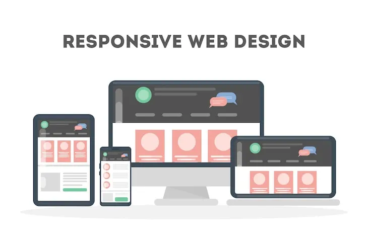

Design Responsivo - Mobile First

1. Introdução
A Web moderna evoluiu de simples páginas estáticas para sistemas altamente interativos, acessíveis e eficientes energeticamente. Hoje, o desenvolvimento de sites não visa apenas a aparência visual, mas também a experiência do usuário (UX/UI), a sustentabilidade técnica e a inclusão social. Para que qualquer pessoa — mesmo sem conhecimentos técnicos — possa compreender esse cenário, este guia resume os principais pilares da criação de sites modernos, organizados de forma simples e estruturada, ideal para ser transformada diretamente nas seções de um site da internet.
2. Design Responsivo, Fluido e "Mobile-First" (Celular Primeiro)
2.1 O que é cada tipo de Layout?
No desenvolvimento web, a disposição dos elementos na tela (layout) define como o usuário interage com o conteúdo. Existem três formatos principais:
- Layout Fixo: É um formato antigo onde as caixas do site têm tamanhos rígidos em pixels. Se a tela for menor do que o tamanho definido, o site não se adapta e surgem barras de rolagem desconfortáveis, obrigando o usuário a dar zoom com os dedos para conseguir ler.
- Layout Fluido: Utiliza medidas relativas e percentuais (como % em vez de pixels). As colunas diminuem e aumentam de forma proporcional ao tamanho da janela. Porém, em telas muito pequenas como as de celulares, os elementos podem ficar espremidos e difíceis de ler.
- Design Responsivo: É a evolução ideal. O site responde e se adapta ao tamanho da tela (janela de visualização ou "viewport"). Ele muda a sua estrutura de forma inteligente: por exemplo, colocando fotos uma abaixo da outra em celulares para facilitar a leitura, e lado a lado em telas de computadores.
2.2 Boas Práticas de Desenvolvimento
- Filosofia Mobile-First: Significa planejar e programar o site pensando primeiro nas telas pequenas dos celulares para depois adaptá-lo para computadores. Isso economiza recursos, simplifica o código e foca no que é realmente essencial para o usuário.
- Uso de Media Queries: Recursos de código CSS que funcionam como condições. Elas dizem ao navegador: "Se a tela tiver pelo menos 600 pixels de largura, aplique este visual diferente".
- A Tag Meta Viewport: É uma linha de código crucial que avisa ao celular que o site foi planejado para ser responsivo. Sem ela, o aparelho celular finge que é uma tela de computador grande e deixa tudo minúsculo.
3. Experiência do Usuário (UX/UI) e Eficiência Energética
3.1 O Impacto da Web no Consumo de Energia
A sustentabilidade técnica na Web foca em reduzir o consumo de energia dos dispositivos dos usuários (celulares, tablets e computadores). Sites que carregam mais rápido e exigem menos processamento economizam a bateria do aparelho do usuário e reduzem as emissões de carbono na atmosfera.
3.2 Como Deixar o Site mais Leve e Eficiente?
- Fontes Inteligentes (Tipografia): Fontes sem serifa (sans-serif, com visual mais limpo e moderno) são geralmente mais rápidas de carregar e ideais para celulares. Recomenda-se usar as fontes que já vêm embutidas no sistema do celular em vez de carregar fontes externas da internet.
- Menus de Navegação Simples: Menus horizontais embutidos são as opções mais rápidas para computadores e tablets, enquanto menus verticais mostram melhor desempenho em celulares.
- Botões Otimizados: Botões padrão e links textuais limpos carregam muito rápido em todos os aparelhos. Efeitos visuais pesados (como sombras complexas ou botões transparentes) podem atrasar o carregamento em celulares devido ao esforço extra de processamento gráfico.
- Formato de Imagens Moderno: Prefira formatos como WebP ou HEIC em vez de PNG e JPEG antigos. Eles oferecem alta qualidade com arquivos muito menores, acelerando o download do site.
4. Acessibilidade e Web Inclusiva
4.1 O que é Acessibilidade na Web?
Acessibilidade significa garantir que o site possa ser navegado e compreendido por qualquer pessoa, incluindo pessoas com deficiências visuais ou motoras. Aplicativos de leitura de tela (como o TalkBack em celulares Android) ajudam esses usuários transformando o conteúdo do site em voz.
4.2 O Modelo FIF (Foco, Informação e Funcionalidade)
Para estruturar um site perfeitamente acessível, os desenvolvedores utilizam o modelo FIF, dividido em três etapas de interação:
- Focusability (Foco / Capacidade de Alcance): Garante que o leitor de tela consiga "enxergar" e selecionar cada elemento interativo do site. Evita problemas comuns como: Elementos Não Acessíveis (botões importantes ignorados); Elementos Excessivamente Acessíveis (itens repetidos poluem a navegação); e Granularidade Incorreta (quando o site divide uma frase em vários pedacinhos confusos ou junta um menu inteiro em um bloco só).
- Information (Informação / Compreensão): Garante que os elementos tenham legendas claras descritas em texto e que a ordem de leitura do site faça sentido lógico.
- Functionality (Funcionalidade / Ação): Garante que todas as funções do site funcionem perfeitamente por comandos de voz ou teclado, oferecendo alternativas acessíveis (como uma opção de áudio para decifrar testes de segurança difíceis de ver).
5. Recursos Avançados: Progressive Web Apps(PWA) e Aumentação
5.1 O que são Progressive Web Apps (PWAs)?
Os PWAs são sites modernos criados com tecnologias comuns (HTML, CSS e JavaScript) que podem ser instalados diretamente no celular ou computador como se fossem aplicativos de loja, mas sem precisar passar por downloads pesados.
5.2 Como os PWAs funcionam?
- Service Workers (Operários de Serviço): São pequenos programas executados em segundo plano no navegador. Eles funcionam como intermediários, salvando as informações na memória do aparelho (cache) para que o site possa abrir e funcionar mesmo se o usuário estiver completamente sem internet (modo offline).
- Manifesto Web (manifest.json): Um arquivo de texto simples que guarda informações básicas do aplicativo, como o nome, as cores do tema e os ícones que aparecerão na tela inicial do celular.
- Origem Segura (HTTPS): Para garantir a segurança dos dados e a privacidade do usuário, todos os PWAs devem rodar obrigatoriamente sob conexões seguras e criptografadas.
5.3 Aumentação da Web Móvel (Web Augmentation)
Para tornar a navegação ainda mais amigável e poupar a bateria dos celulares, existem extensões de navegador (como o MAWA para o Firefox móvel) que adaptam as páginas da web às necessidades do usuário. Essas ferramentas reduzem o número de ações necessárias, evitando que o usuário precise digitar URLs longas, rolar a tela excessivamente ou abrir dezenas de abas.
6. Integração com Tecnologia Gráfica, Cores e Materiais
O design de sites modernos se conecta diretamente com avanços científicos de cores, impressão e engenharia de materiais:
- Consistência de Cores e Iluminação: Estudos apontam que a iluminação ambiente (como lâmpadas LED quentes de 3000K) e a claridade de fundos neutros afetam significativamente a percepção de cores e o conforto visual em exibições de telas digitais.
- Prova Digital SCCA: Estudos apontam que a iluminação ambiente (como lâmpadas LED quentes de 3000K) e a claridade de fundos neutros afetam significativamente a percepção de cores e o conforto visual em exibições de telas digitais.
- Embalagens Inteligentes e Sustentáveis: A tecnologia gráfica e o design físico hoje caminham juntos. O uso de Realidade Aumentada (AR) em códigos QR de embalagens permite visualizar produtos em 3D sem abrir a caixa. Além disso, novas pesquisas desenvolvem tintas fluorescentes ecológicas, circuitos eletrônicos flexíveis impressos com nanosilver e plásticos biodegradáveis feitos de amido e bagaço de cana para substituir o plástico poluente.
7. Conclusão
A criação de um site moderno de sucesso depende da união inteligente entre beleza visual, eficiência de carregamento para poupar energia, acessibilidade sem barreiras e o uso de recursos como PWAs para funcionamento offline. Compreender como os elementos digitais interagem com a percepção humana e os novos materiais físicos permite que a tecnologia sirva como uma ponte de comunicação simples, ecológica, inclusiva e eficiente para todos.